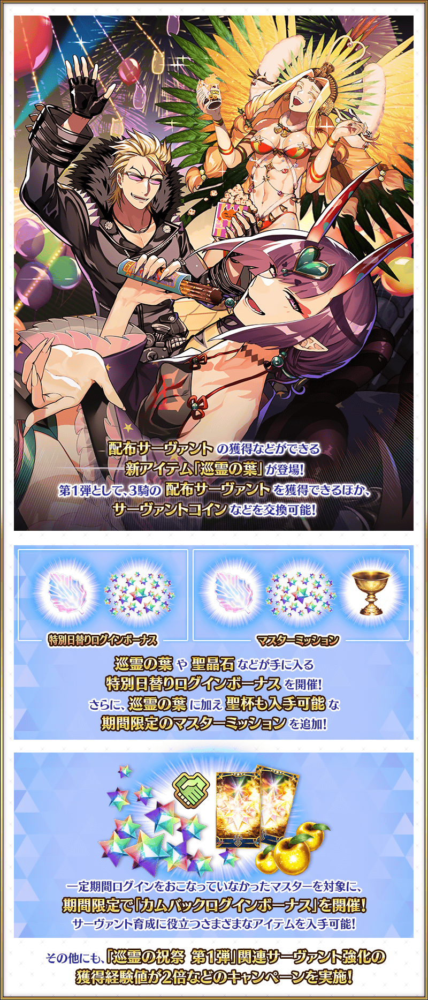
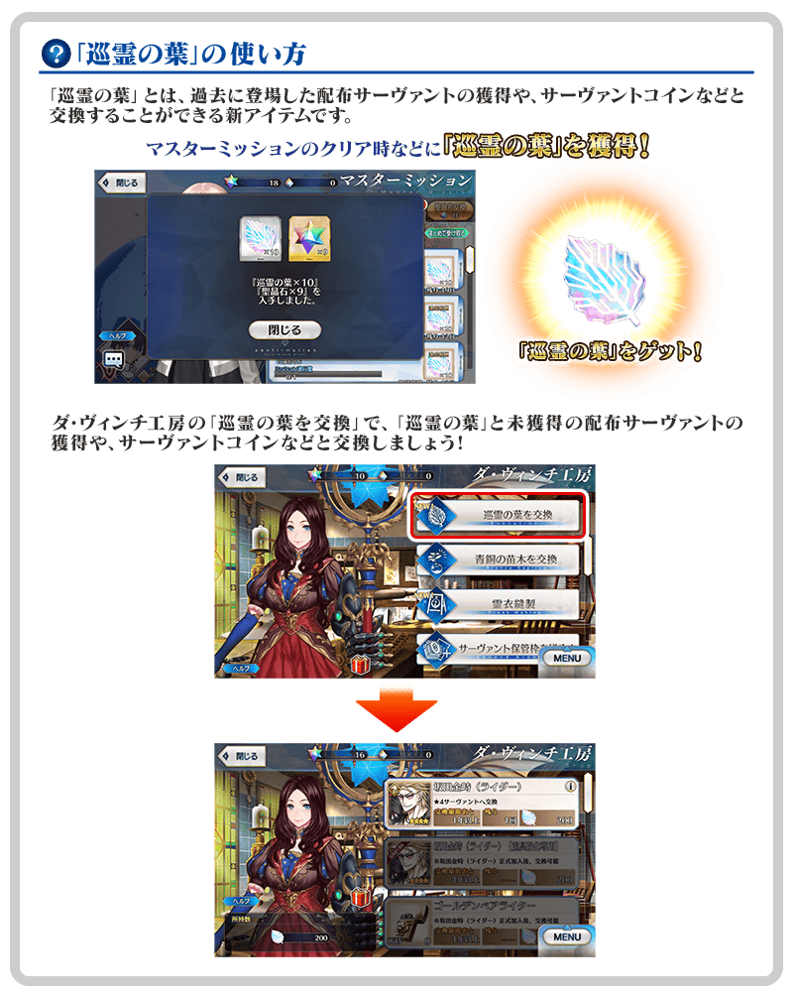
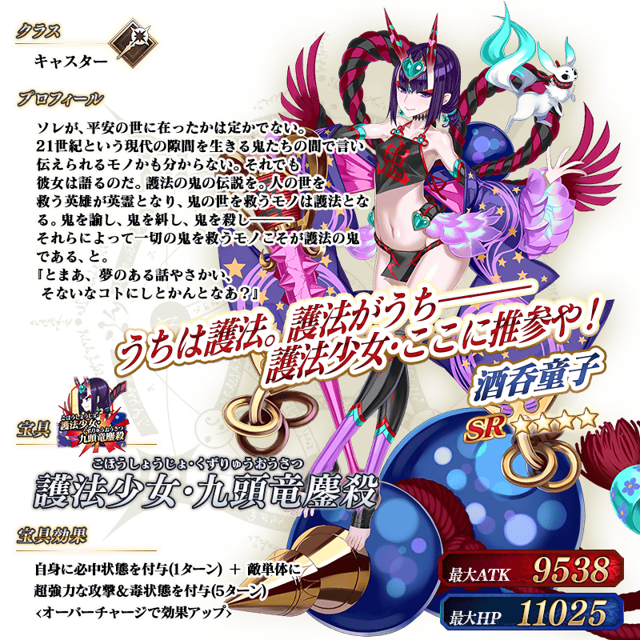
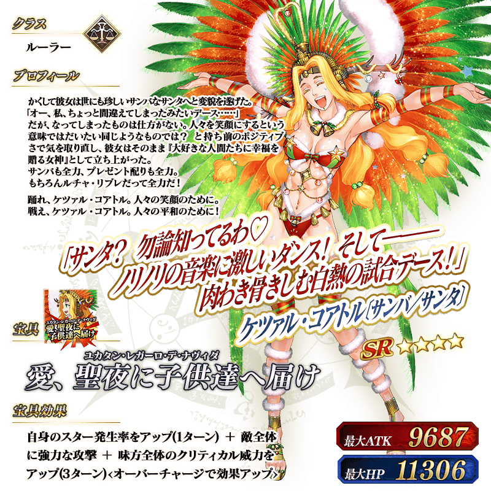
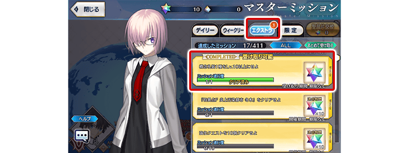
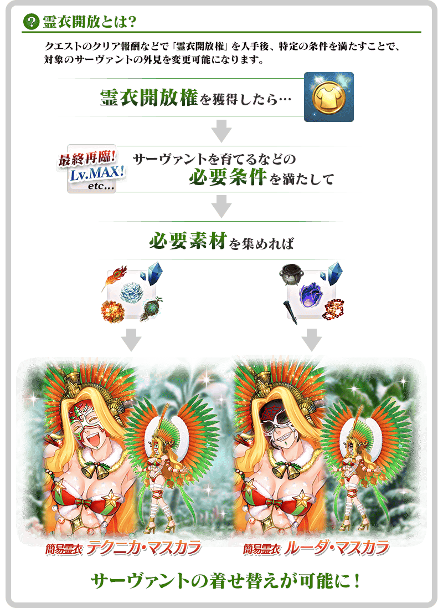
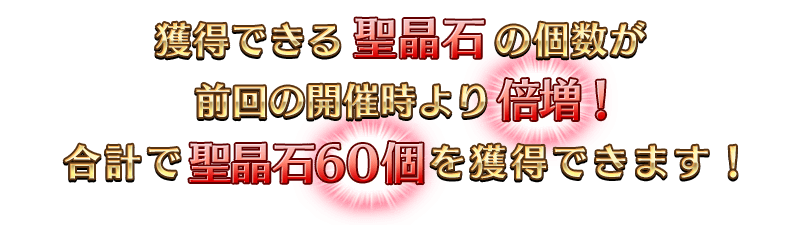

新追加可獲得推進期間限定活動後可獲得的從者(以下稱配布從者)的道具「巡靈之葉」！
在過去舉辦活動的配布從者，變成使用「巡靈之葉」使用後可獲得。
「巡靈之葉」的獲得對象並非期間限定，會永久追加到達文西工房的「巡靈之葉交換」的陣容。
做為其第1彈，從4月2日(日) 17:00「★4(SR)坂田金時(Rider)」「★4(SR)酒吞童子(Caster)」「★4(SR)魁札爾・科亞特爾〔森巴／聖誕〕」的3位與其靈基再臨素材、寶具強化専用靈基和從者硬幣登場！
今後也預定追加可獲得的配布從者，敬請期待！
◆舉辦期間◆
2023年4月2日(日) 17:00～4月16日(日) 11:59
所謂「巡靈的祝祭」？
「巡靈的祝祭」是為了記念可靠「巡靈之葉」獲得的配布從者追加所實施的期間限定宣傳活動。
「巡靈的祝祭 第1彈」中，實施可入手獲得再登場配布從者必須的「巡靈之葉」的特別每日交替登入獎勵和期間限定的御主任務為首的各式各樣措施！
「巡靈的祝祭」今後也預定會舉辦，敬請期待！
※本頁面皆為開發中圖片。會有與實際圖片相異的情況。

追加可獲得過去的配布從者外，可交換配布從者的從者硬幣等的新道具「巡靈之葉」。
第1彈中「★4(SR)坂田金時(Rider)」、「★4(SR)酒吞童子(Caster)」、「★4(SR)魁札爾・科亞特爾〔森巴／聖誕〕」變永久能獲得。
今後也預定追加可獲得的配布從者！
活用「巡靈之葉」，試著獲得未獲得的配布從者和更加強化還在強化途中的配布從者吧！
◆功能實裝時間◆
2023年4月2日(日) 17:00～
◆追加道具(永久)◆
| 追加道具 | 獲得・能交換次數 | 1次的獲得・交換 必須的巡靈之葉數 |
|---|---|---|
| 坂田金時(Rider) | 1次 | 200枚 |
| 坂田金時(Rider) 【寶具強化専用】 |
能獲得可強化到寶具等級5的狀況(最多4次為止) | 200枚 |
| Golden Bear Lighter 【坂田金時(Rider)靈基再臨素材】 |
4次 | 50枚 |
| 從者硬幣 【坂田金時(Rider)】 |
48次 (1次交換10枚) |
50枚 |
| 酒吞童子(Caster) | 1次 | 200枚 |
| 酒吞童子(Caster) 【寶具強化専用】 |
能獲得可強化到寶具等級5的狀況(最多4次為止) | 200枚 |
| 護法之杖 【酒吞童子(Caster)靈基再臨素材】 |
4次 | 50枚 |
| 從者硬幣 【酒吞童子(Caster)】 |
48次 (1次交換10枚) |
50枚 |
| 【魁札爾・科亞特爾〔森巴／聖誕〕 | 1次 | 200枚 |
| 魁札爾・科亞特爾〔森巴／聖誕〕 【寶具強化専用】 |
能獲得可強化到寶具等級5的狀況(最多4次為止) | 200枚 |
| 庫庫爾假面 【魁札爾・科亞特爾〔森巴／聖誕〕靈基再臨素材】 |
4次 | 50枚 |
| 從者硬幣 【魁札爾・科亞特爾〔森巴／聖誕〕】 |
48次 (1次交換10枚) |
50枚 |
※可在「巡靈之葉交換」獲得的「★4(SR)坂田金時(Rider)」、「★4(SR)酒吞童子(Caster)」、「★4(SR)魁札爾・科亞特爾〔森巴／聖誕〕」及寶具強化専用靈基、靈基再臨素材、從者硬幣為永久追加，沒有獲得・交換期限。 ※獲得的配布從者會贈予到禮物箱，可自禮物箱領取來入手。 ※在過去舉辦的期間限定活動中，對象從者只暫時加入而未正式加入的情況，在靠「巡靈之葉」獲得時不會繼承脫離前的強化狀態，以初期狀態加入。 ※已經有對象從者可強化到寶具等級5狀況的情況，無法獲得更多。 ※未入手對象從者的情況，無法獲得寶具強化専用靈基、靈基再臨素材、從者硬幣。 ※「巡靈之葉交換」中就算獲得「累計第6位以後」的配布從者，無法入手稀有稜鏡。

「巡靈之葉」獲得方法
巡靈之葉可靠在御主任務永久追加的每日任務及Extra任務獲得。
■「巡靈之葉」可入手永久方法
・每日任務
・Extra任務
另外，在本宣傳活動期間中實施的特別每日交替登入獎勵和期間限定御主任務中也可獲得巡靈之葉，藉此機會收集吧！


介紹「巡靈的祝祭 第1彈」3位對象從者的寶具影片！
介紹「★4(SR)坂田金時(Rider)」「★4(SR)酒吞童子(Caster)」「★4(SR)魁札爾・科亞特爾〔森巴／聖誕〕」的寶具演出！
【★4(SR)坂田金時(Rider)】
【★4(SR)酒吞童子(Caster)】
【★4(SR)魁札爾・科亞特爾〔森巴／聖誕〕】
為了記念「巡靈的祝祭 第1彈」舉辦，實施特別每日交替登入獎勵。
期間中，從週日3:00開始的登入獎勵中，巡靈之葉再加上，也可入手聖晶石。
最多贈送巡靈之葉1200枚與聖晶石30個(聖晶石召喚最多11次份)！
※(聖晶石召喚最多11次份)限在同一個聖晶石召喚進行的情況。
◆贈禮領取條件◆
通過「特異點F 炎上汙染都市 冬木」的御主對象
※在管理室(ターミナル)畫面的關卡橫幅必須要有「CLEAR」的文字顯示。
※各登入獎勵開始日的3:59前滿足條件進行登入來領取。
※不論登入的次數，會對應登入的時間領取禮物。
※禮物各只能領取1次。
※每日3:00會切換給予的道具內容。
◆舉辦期間◆
2023年4月3日(一) 3:00～5月1日(一) 2:59
◆「巡靈的祝祭 第1彈」舉辦記念特別每日交替登入獎勵◆
| 登入時間 | 贈送內容 |
|---|---|
| 4月3日(一) 3:00～4月4日(二) 2:59 | 巡靈之葉 30枚 |
| 4月4日(二) 3:00～4月5日(三) 2:59 | 巡靈之葉 30枚 |
| 4月5日(三) 3:00～4月6日(四) 2:59 | 巡靈之葉 100枚 |
| 4月6日(四) 3:00～4月7日(五) 2:59 | 巡靈之葉 30枚 |
| 4月7日(五) 3:00～4月8日(六) 2:59 | 巡靈之葉 30枚 |
| 4月8日(六) 3:00～4月9日(日) 2:59 | 巡靈之葉 30枚 |
| 4月9日(日) 3:00～4月10日(一) 2:59 |
巡靈之葉 50枚 聖晶石 6個 |
| 4月10日(一) 3:00～4月11日(二) 2:59 | 巡靈之葉 30枚 |
| 4月11日(二) 3:00～4月12日(三) 2:59 | 巡靈之葉 30枚 |
| 4月12日(三) 3:00～4月13日(四) 2:59 | 巡靈之葉 100枚 |
| 4月13日(四) 3:00～4月14日(五) 2:59 | 巡靈之葉 30枚 |
| 4月14日(五) 3:00～4月15日(六) 2:59 | 巡靈之葉 30枚 |
| 4月15日(六) 3:00～4月16日(日) 2:59 | 巡靈之葉 30枚 |
| 4月16日(日) 3:00～4月17日(一) 2:59 |
巡靈之葉 50枚 聖晶石 6個 |
| 4月17日(一) 3:00～4月18日(二) 2:59 | 巡靈之葉 30枚 |
| 4月18日(二) 3:00～4月19日(三) 2:59 | 巡靈之葉 30枚 |
| 4月19日(三) 3:00～4月20日(四) 2:59 | 巡靈之葉 100枚 |
| 4月20日(四) 3:00～4月21日(五) 2:59 | 巡靈之葉 30枚 |
| 4月21日(五) 3:00～4月22日(六) 2:59 | 巡靈之葉 30枚 |
| 4月22日(六) 3:00～4月23日(日) 2:59 | 巡靈之葉 30枚 |
| 4月23日(日) 3:00～4月24日(一) 2:59 |
巡靈之葉 50枚 聖晶石 9個 |
| 4月24日(一) 3:00～4月25日(二) 2:59 | 巡靈之葉 30枚 |
| 4月25日(二) 3:00～4月26日(三) 2:59 | 巡靈之葉 30枚 |
| 4月26日(三) 3:00～4月27日(四) 2:59 | 巡靈之葉 100枚 |
| 4月27日(四) 3:00～4月28日(五) 2:59 | 巡靈之葉 30枚 |
| 4月28日(五) 3:00～4月29日(六) 2:59 | 巡靈之葉 30枚 |
| 4月29日(六) 3:00～4月30日(日) 2:59 | 巡靈之葉 30枚 |
| 4月30日(日) 3:00～5月1日(一) 2:59 |
巡靈之葉 50枚 聖晶石 9個 |
下述的期間中，在「御主任務」的「限定」標籤內以期間限定追加「巡靈的祝祭 第1彈任務」。
達成所有任務的話，可得到巡靈之葉100枚、聖杯1個、聖晶石30個(聖晶石召喚最多11次份)！
※(聖晶石召喚最多11次份)限在同一個聖晶石召喚進行的情況。
◆舉辦期間◆
2023年4月2日(日) 17:00～4月16日(日) 11:59
◆領取期間◆
2023年4月2日(日) 17:00～4月23日(日) 11:59
◆追加任務◆
| 任務名稱 | 任務達成報酬 |
|---|---|
| 通過3次任意的每日關卡「蒐集種火」 |
巡靈之葉 10枚 聖晶石 3個 |
| 通過6次任意的每日關卡「蒐集種火」 |
巡靈之葉 20枚 聖晶石 6個 |
| 通過3次主線地圖的自由關卡 |
巡靈之葉 10枚 聖晶石 9個 |
| 坂田金時(Rider)、酒吞童子(Caster)、魁札爾・科亞特爾〔森巴／聖誕〕任一強化到Lv.10以上 | 巡靈之葉 10枚 |
| 坂田金時(Rider)、酒吞童子(Caster)、魁札爾・科亞特爾〔森巴／聖誕〕任一強化到Lv.40以上 | 巡靈之葉 50枚 |
| 通過所有巡靈的祝祭的限定任務 |
聖杯 1個 聖晶石 12個 |
※請注意舉辦期間與領取期間有所差異。 ※請注意與每週日23:00更新的普通任務(Weekly)不同欄位，超過領取期間的話無法入手報酬。 ※就算達成「巡靈的祝祭 第1彈任務」，也不會計算在普通任務(Weekly)的任務進行度。 ※已經將入手過的坂田金時(Rider)、酒吞童子(Caster)、魁札爾・科亞特爾〔森巴／聖誕〕任一強化到Lv.40以上的情況，任務會自動達成。
在「御主任務(Extra任務)」內，追加推進主線關卡的進行度後可達成的新任務。
通過所有的任務後，可獲得4500枚的「巡靈之葉」！
◆追加時間(永久)◆
2023年4月2日(日) 17:00～
◆追加Extra任務◆
| 任務名稱 | 任務達成報酬 |
|---|---|
| 通過『終局特異點 冠位時間神殿 所羅門』 | 巡靈之葉 500枚 |
| 通過『第七特異點 絕對魔獸戰線 巴比倫尼亞』 | 巡靈之葉 500枚 |
| 通過『第六特異點 神聖圓桌領域 卡美洛』 | 巡靈之葉 500枚 |
| 通過『第五特異點 北美神話大戰 合眾為一』 | 巡靈之葉 500枚 |
| 通過『第四特異點 死界魔霧都市 倫敦』 | 巡靈之葉 500枚 |
| 通過『第三特異點 封鎖終局四海 俄刻阿諾斯』 | 巡靈之葉 500枚 |
| 通過『第二特異點 永續狂氣帝國 羅馬七省』 | 巡靈之葉 500枚 |
| 通過『第一特異點 邪龍百年戰爭 奧爾良』 | 巡靈之葉 500枚 |
| 通過『特異點F 炎上汙染都市 冬木』 | 巡靈之葉 500枚 |
※已經通過對象主線關卡的情況，任務會自動達成。 ※根據主線故事的進行度會有無法達成任務的情況。
◆通過報酬的領取方式◆
在御主任務畫面顯示的「Extra」的項目內，會顯示關聯的任務，請點擊已通過的任務來領取達成報酬。

在每日任務永久追加「通過所有的每日任務」！
在通過所有每日任務時，可入手「巡靈之葉」30枚做為任務達成報酬。
◆追加時間(永久)◆
2023年4月2日(日) 23:00～
◆每日任務報酬◆
| 任務名稱 | 任務達成報酬 |
|---|---|
| 通過1次關卡 | 魔力稜鏡 10個 |
| 〇月交換券 1枚 | |
| 通過2次關卡 | 魔力稜鏡 10個 |
| 〇月交換券 1枚 | |
| 通過3次關卡 | 魔力稜鏡 10個 |
| 〇月交換券 1枚 | |
| 通過所有的每日任務 | 巡靈之葉 30枚 |
※「每日任務」會在每天23:00。 ※所有的關卡皆為計算的對象。 ※每日任務的報酬在任務達成時會自動領取。不需要於任務清單「領取」。
下述的期間中，在進行「巡靈的祝祭 第1彈」關聯從者的強化時，獲得經驗值以期間限定變成2倍！
務必藉此機會強化對象從者吧！
◆舉辦期間◆
2023年4月2日(日) 17:00～4月16日(日) 11:59
◆對象從者◆
| 職階 | 稀有度 | 從者名 |
|---|---|---|
| Rider | ★★★★ | 坂田金時 |
| Caster | ★★★★ | 酒吞童子 |
| Ruler | ★★★★ | 魁札爾・科亞特爾〔森巴／聖誕〕 |
下述的期間中，在進行從者的強化時，大成功(經驗值2倍加成)・極大成功(經驗值3倍加成)的發生率以期間限定變成2倍！
務必藉此強化中意的從者和概念禮裝吧！
◆舉辦期間◆
2023年4月2日(日) 17:00～4月16日(日) 11:59
下述的期間中，在強化從者時必須的QP的消耗量，以期間限定變成1/2！
配合大成功・極大成功發生率2倍，別錯過此機會！
◆舉辦期間◆
2023年4月2日(日) 17:00～4月16日(日) 11:59
※請注意從者技能強化、靈基再臨(從者進化)、絆等級上限開放、指令紋章刻印、指令卡強化、附加技能強化、從者寶具強化、聖杯轉臨、靈衣開放為對象外。
在迦勒底之門內出現的對象「蒐集種火」以期間限定全天開放！
◆舉辦期間◆
2023年4月2日(日) 17:00～4月16日(日) 11:59
◆對象關卡◆
・【巡靈的祝祭 第1彈】每日交替 蒐集種火<騎・劍篇>
・【巡靈的祝祭 第1彈】每日交替 蒐集種火<術・弓篇>
另外，期間中，所有的「蒐集種火」的消耗AP變成1/2！(就算在戰鬥中撤退的情況，也會是同様的消耗量)
◆舉辦期間◆
2023年4月2日(日) 17:00～4月16日(日) 11:59
◆對象關卡◆
・所有的「蒐集種火」的關卡
【蒐集種火 關卡的推薦Lv與消耗AP】
| 難易度 | 推薦Lv | 消耗AP |
|---|---|---|
| 初級 | 5 | 10→5 |
| 中級 | 10 | 20→10 |
| 上級 | 25 | 30→15 |
| 超級 | 40 | 40→20 |
| 極級 | 60 | 40→20 |
「巡靈的祝祭 第1彈」關聯從者，在期間中所有的關卡中，會得到「自身的攻擊威力提升」的加成！
在所有的關卡中攻擊的威力以期間限定提升50%，強化對象從者來挑戰關卡吧！
◆舉辦期間◆
2023年4月2日(日) 17:00～5月21日(日) 11:59
【自身的攻擊威力提升的效果量與對象從者】
| 自身的攻擊威力 | 職階 | 稀有度 | 從者名 |
|---|---|---|---|
| ＋50% | Rider | ★★★★ | 坂田金時 |
| Caster | ★★★★ | 酒吞童子 | |
| Ruler | ★★★★ | 魁札爾・科亞特爾〔森巴／聖誕〕 |
在2023年3月26日(日)公開的「Fate/Grand Order 特別舞台 in AnimeJapan 2023」，發表了預定對3位對象「獲得下次期間限定活動的活動加成」，變更成「在所有關卡自身的攻擊威力以期間限定提升」。
非常抱歉做了發表後的變更，請多多指教。
在2018年舉辦的期間限定活動「聖誕節2018 Holy・Samba・Night ～降雪遺跡與少女騎士～」中登場的「★4(SR)魁札爾・科亞特爾〔森巴／聖誕〕」的簡易靈衣「正派假面」與「反派假面」的開放權在達文西工房的「靈衣縫製」追加！
各自用「魔力稜鏡 500個」後可入手上述簡易靈衣的開放權。
※想靈衣開放的話，除了靈衣開放權外再加上必須滿足一些開放條件。 ※追加到「靈衣縫製」的簡易靈衣「正派假面」開放權、簡易靈衣「反派假面」開放權為永久，沒有交換期限。 ※關於已經取得交換對象靈衣開放權的玩家，無法交換。
◆追加時間(永久)◆
2023年4月2日(日) 17:00～
◆有關靈衣開放權的注意◆
※「★4(SR)魁札爾・科亞特爾〔森巴／聖誕〕」的靈衣是只有外觀變化，語音沒有變化的「簡易靈衣」。
※請注意未持有「★4(SR)魁札爾・科亞特爾〔森巴／聖誕〕」的情況，可入手靈衣開放權。但無法進行靈衣開放。
◆靈衣縫製的追加道具(永久)◆
| 追加道具 | 能交換次數 | 1次交換所需的 魔力稜鏡數 |
|---|---|---|
| 簡易靈衣「正派假面」開放權 | 1次 | 500個 |
| 簡易靈衣「反派假面」開放權 | 1次 | 500個 |


「靈衣開放」是自強化畫面進行。
※「靈衣開放」後會自動切換戰鬥角色和外觀圖片。若想回到「靈衣開放」前的狀態和變成其他再臨階段的情況，可自從者詳細畫面變更。 ※進行「靈衣開放」不會讓職階和能力等有所變化。
介紹★4(SR)魁札爾・科亞特爾〔森巴／聖誕〕的簡易靈衣開放後的寶具影片！
介紹各自開放簡易靈衣「正派假面」「反派假面」的「★4(SR)魁札爾・科亞特爾〔森巴／聖誕〕」寶具演出！
【正派假面】
【反派假面】
自2023年3月27日(一) 17:00，在起跑衝刺宣傳活動的登入獎勵，以期間限定追加特別獎勵！
下述期間中，第7天的獎勵變成2倍，增量到聖晶石召喚最多44次份的聖晶石60個與呼符20張、友情點數4,000pt、200萬QP、睿智的猛火ALL★4(SR)40張、黃金果實20個。
※聖晶石召喚最多44次份限在同一個聖晶石召喚進行的情況。
◆舉辦期間◆
2023年3月27日(一) 17:00～5月1日(一) 11:59
※本宣傳活動與自2023年3月27日(一) 17:00實施的以下宣傳活動是同樣的。
＞＞【期間限定】「Fate/Grand Order 春之新手御主聲援宣傳活動2023！」
【起跑衝刺登入獎勵合計】
・聖晶石225個與呼符45張(聖晶石召喚最多132次份)
※聖晶石召喚最多132次份限在同一個聖晶石召喚進行的情況。
・黃金果實42個
・睿智的猛火ALL★4(SR)300張
・420萬QP
・友情點數30,000pt
◆起跑衝刺登入獎勵的內容◆
| 總登入天數 | 入手登入獎勵 |
|---|---|
| 第1天 |
聖晶石 2個 呼符 5枚 友情點數 2,000pt 10萬QP 睿智的猛火ALL★4(SR) 20枚 黃金果實 1個 |
| 第2天 |
聖晶石 3個 呼符 5枚 友情點數 2,000pt 10萬QP 睿智的猛火ALL★4(SR) 20枚 黃金果實 1個 |
| 第3天 |
聖晶石 5個 呼符 5枚 友情點數 2,000pt 10萬QP 睿智的猛火ALL★4(SR) 20枚 黃金果實 1個 |
| 第4天 |
聖晶石 7個 友情點數 2,000pt 10萬QP 睿智的猛火ALL★4(SR) 20枚 黃金果實 1個 |
| 第5天 |
聖晶石 10個 友情點數 2,000pt 10萬QP 睿智的猛火ALL★4(SR) 20枚 黃金果實 1個 |
| 第6天 |
聖晶石 15個 友情點數 2,000pt 10萬QP 睿智的猛火ALL★4(SR) 20枚 黃金果實 1個 |
| 第7天 |
【期間限定増量】 聖晶石 60個 呼符 20枚 友情點數 4,000pt 200萬QP 睿智的猛火ALL★4(SR) 40枚 黃金果實 20個 |
| 第8天 |
聖晶石 5個 友情點數 2,000pt 10萬QP 睿智的猛火ALL★4(SR) 20枚 黃金果實 1個 |
| 第9天 |
聖晶石 7個 友情點數 2,000pt 10萬QP 睿智的猛火ALL★4(SR) 20枚 黃金果實 1個 |
| 第10天 |
聖晶石 9個 友情點數 2,000pt 10萬QP 睿智的猛火ALL★4(SR) 20枚 黃金果實 1個 |
| 第11天 |
聖晶石 12個 友情點數 2,000pt 10萬QP 睿智的猛火ALL★4(SR) 20枚 黃金果實 1個 |
| 第12天 |
聖晶石 15個 友情點數 2,000pt 10萬QP 睿智的猛火ALL★4(SR) 20枚 黃金果實 1個 |
| 第13天 |
聖晶石 25個 友情點數 2,000pt 10萬QP 睿智的猛火ALL★4(SR) 20枚 黃金果實 1個 |
| 第14天 |
聖晶石 50個 呼符 10枚 友情點數 2,000pt 100萬QP 睿智的猛火ALL★4(SR) 20枚 黃金果實 10個 |
※登入獎勵會在每天3:00配發。 ※表格中的紅字為期間限定的特別獎勵。 ※在舉辦期間內未進行第7天登入的情況，無法領取2倍的獎勵。
對一定期間未登入的御主對象，以期間限定舉辦『「Fate/Grail League」發佈記念 回歸次數登入獎勵 「巡靈的祝祭」舉辦前夕特別版』
本次的「回歸次數登入獎勵」是為了記念預定從2023年4月2日(日) 17:00舉辦的「巡靈的祝祭」特別版，可獲得的聖晶石個數比上次舉辦時倍增！
在下述期間中登入14次(1天算1次)的話，贈送聖晶石60個(聖晶石召喚最多22次份)與對從者的培育有用的各種道具！
※(聖晶石召喚最多22次份)限在同一個聖晶石召喚進行的情況。

◆舉辦期間◆
2023年4月1日(六) 23:00～5月1日(一) 2:59
※期間內未登入的話無法領取。
※本宣傳活動與自2023年3月31日(五) 23:00實施的以下宣傳活動是同樣的。 ＞＞「Fate/Grail League」發佈記念宣傳活動
◆贈送對象◆
滿足以下所有條件的御主對象
・2023年3月1日(三) 23:00～3月31日(五) 22:59的期間未進行登入
・2023年4月30日(日) 2:59前通過「特異點F 炎上汙染都市 冬木」
※上述時間前，在管理室(ターミナル)畫面的關卡橫幅必須要有「CLEAR」的文字顯示。
【回歸登入獎勵合計】 ・聖晶石 60個(聖晶石召喚最多22次份) ・友情點數 合計42,000pt(友情點數召喚210次份) ・睿智的業火ALL★5(SSR) 50枚 ・黃金果實 21個
◆回歸登入獎勵的內容◆
| 登入次數 | 贈送內容 |
|---|---|
| 第1次 |
聖晶石 3個 友情點數 2,000pt 睿智的業火ALL★5(SSR) 50枚 黃金果實 3個 |
| 第2次 |
聖晶石 9個 友情點數 2,000pt 黃金果實 3個 |
| 第3次 |
聖晶石 3個 友情點數 2,000pt 黃金果實 3個 |
| 第4次 |
聖晶石 3個 友情點數 2,000pt 黃金果實 3個 |
| 第5次 |
聖晶石 3個 友情點數 2,000pt 黃金果實 3個 |
| 第6次 |
聖晶石 3個 友情點數 2,000pt 黃金果實 3個 |
| 第7次 |
聖晶石 9個 友情點數 2,000pt 黃金果實 3個 |
| 第8次 |
聖晶石 3個 友情點數 4,000pt |
| 第9次 |
聖晶石 3個 友情點數 4,000pt |
| 第10次 |
聖晶石 3個 友情點數 4,000pt |
| 第11次 |
聖晶石 3個 友情點數 4,000pt |
| 第12次 |
聖晶石 3個 友情點數 4,000pt |
| 第13次 |
聖晶石 3個 友情點數 4,000pt |
| 第14次 |
聖晶石 9個 友情點數 4,000pt |
※第1次的回歸登入獎勵會在2023年3月31日(五) 23:00配發。 ※之後的的回歸登入獎勵會在每天3:00配發。 ※最多14天內能領取，但根據開始遊戲的時間點，可能無法到此上限。
其他還有，期間限定『「巡靈的祝祭 第1彈」Pick Up召喚』的情報公開中！
關於詳情，請自下述橫幅確認。
■『「巡靈的祝祭 第1彈」Pick Up召喚』詳細情報